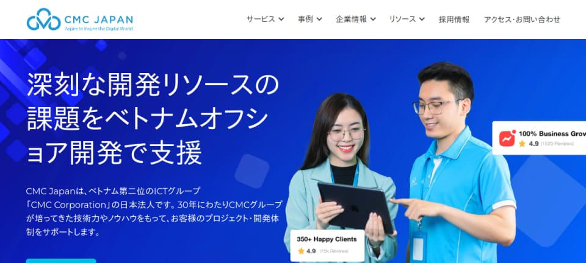
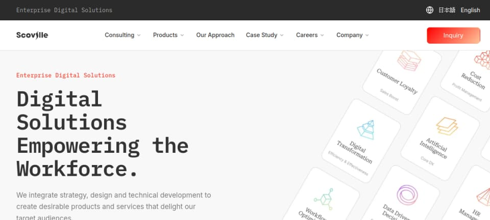
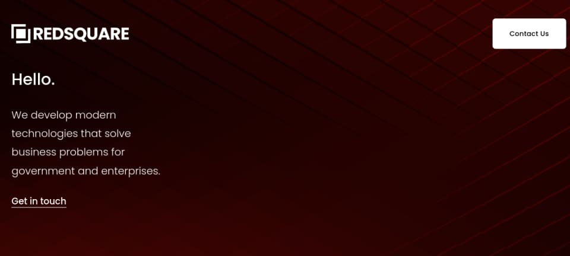
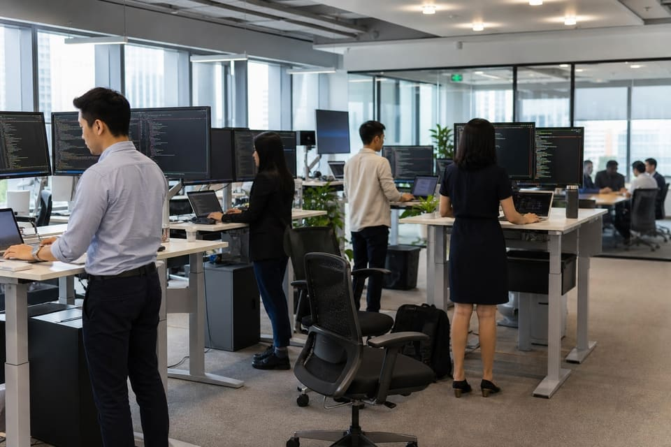
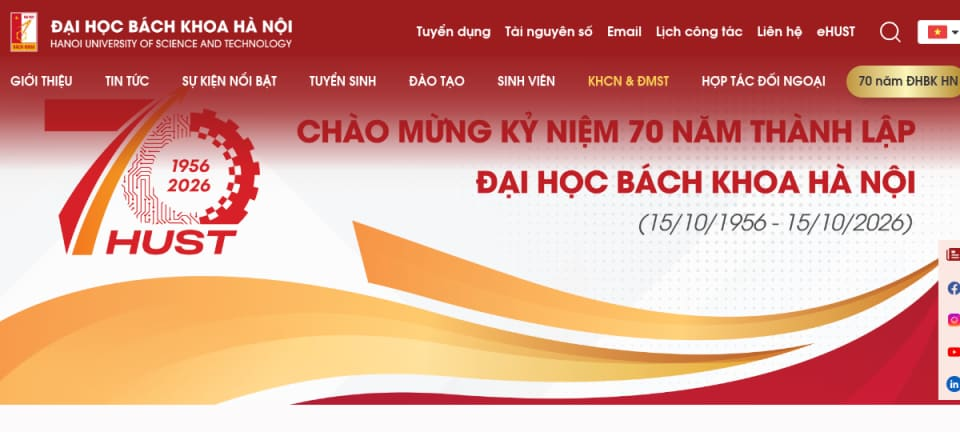
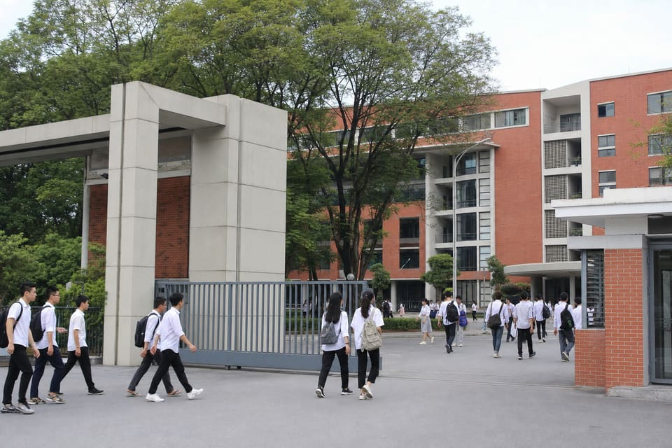

生成AI / LLM
OpenAI / Claude / Gemini · LangChain / LangGraph · Dify · RAG設計 · Agent設計 · pgvector
実務 5年以上 — 業務プロセスの構造化からAIワークフロー化まで
About
1996年生まれ、日本国籍。福岡県福岡市在住。 日本で生まれ、2001年より約24年間ハノイで学業・キャリアを築き、2025年に帰国。 日本人としての価値観と、海外での実務経験の双方を持つグローバルエンジニアです。
ハノイ日本人学校で日本の教育課程を修了し、日本語はネイティブレベル。 ハノイ工科大学にて Computer Science and Engineering を専攻しました。 現在はフリーランスのAIエンジニアとして、AI Agent・RAG・Enterprise Chatbot などの開発に従事しています。
Career
約8年にわたり、FinTech・GovTech・SaaS・生成AI領域で 要件定義から設計・開発・運用まで一貫して担当してきました。
AI Engineer / Full-stack
AIエージェント基盤、RAG検索、EC向けチャットボットなど、生成AIを軸とした業務自動化・プロダクト開発。

公式サイトBridge Engineer / Senior Backend / Technical Lead
日本企業とベトナム開発チームの橋渡しとして、要件構造化・API設計・品質標準化・チームマネジメントを統括。

公式サイトBackend / AI Engineer
看護向けAIシフト最適化システム、B2B SaaSのクラウドネイティブ開発・マイクロサービス化に参画。

公式サイト
Backend Engineer
東南アジア向けE-Wallet決済基盤、政府向けデジタル行政、加盟店管理プラットフォームのバックエンド開発。

公式サイト
Skills
業務の独力遂行から課題発見・後進教育まで対応可能な領域を中心に整理しています。
OpenAI / Claude / Gemini · LangChain / LangGraph · Dify · RAG設計 · Agent設計 · pgvector
実務 5年以上 — 業務プロセスの構造化からAIワークフロー化まで
Python (FastAPI) · Java (Spring Boot) · C# (.NET Core) · TypeScript · REST / OpenAPI
実務 6年以上 — 高負荷トランザクション・冪等性・非同期/バッチ設計
AWS (EC2 / ECS / EKS / RDS / Lambda / S3) · Docker · Kubernetes · CI/CD · CloudWatch
実務 5年以上 — 可用性設計（Multi-AZ / 99.9% SLA）
PostgreSQL / MySQL · Redis · Kafka · React / Next.js · インデックス・クエリチューニング
金融Ledger設計からUI連携まで横断対応
要件定義 · API/DB設計 · コードレビュー · QA標準化 · PM / PL · オフショアブリッジ
PM 3年 / PL 3年 · 最大8名チーム
Achievements
日本向けの代表案件を厳選して掲載しています。各カードのプレビュー画像からサイトへ移動できます。
スキル別の全実績を見るStrengths
業務フローの暗黙知を構造化し、システム設計へ落とし込みます。AIエージェント開発では問い合わせ業務を分解しRAG構造を設計、60%の工数削減を実現しました。
PoCで終わらず、本番運用まで責任を持って設計・実装。AWS構築・API開発・運用設計まで一気通貫で対応できます。
日本企業の品質基準を理解しつつ、海外チームと円滑に協働。曖昧な要件を開発可能な仕様へ変換するブリッジ経験が強みです。
Vision
今後は AI Architect / Technical Lead として、大規模システム設計と技術戦略立案に携わりたいと考えています。 技術力に加え、コミュニケーションとマネジメントを活かし、日本と海外をつなぐグローバルエンジニアとして貢献してまいります。
Contact
採用・案件のご相談は、ご都合のよい連絡手段でご連絡ください。 通常1〜2営業日以内にご返信いたします。
使い慣れたチャットツールから、そのままご連絡いただけます。